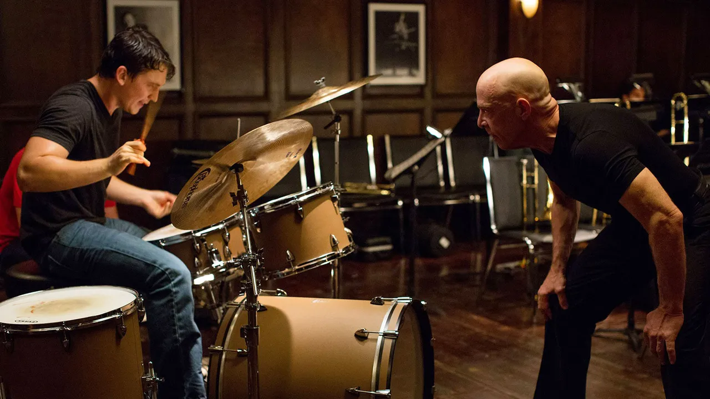

Damien Chazelle, 2014

Studio Band practice room at Shaffer Conservatory.
Whiplash (2014) has received both praise and criticism, and although I don’t have a strong opinion about it either way, I believe it’s a film with much to offer beyond its apparent message.
Opinions vary widely about whether Fletcher should be seen as a villain. And this is justifiable, given the film’s conclusion where Fletcher’s significant smile and Andrew’s outstanding performance are shown. I don’t consider Professor Fletcher to be a villain depicted as entirely evil, but I do think he is undoubtedly an antagonist. Since his malicious actions aren’t driven by a desire to hurt others or for his own pleasure, it’s hard to label them as pure evil. His dedication to music was evidently sincere and untainted.
However, his dedication was so excessive that it became pathological, and because his pedantic methods were wrong, he ultimately became a clear antagonist. One of Fletcher’s most notable traits is his relentless, bulldozer-like drive to achieve his goals. His exceptional musical leadership skills likely stem from this intense dedication. However, this kind of personality not only involves pushing oneself to the limit but also ends up causing harm to others.
He places great importance on the story of Jo Jones throwing a cymbal at Charlie Parker. According to the anecdote, this incident led to Parker’s awakening and eventual rise as a legendary musician. Similarly, Fletcher believes in teaching his students through verbal and physical abuse. He is indifferent to those who give up, unable to withstand his methods, but hopes that at least one student, like Parker, will use their anger as a catalyst for greatness. Fletcher aspires to be like Jo Jones in this process.
It’s no secret that Fletcher displays a highly authoritarian attitude. He seems to have a great deal of self-assurance and firmly believes that his approach is the correct one. In the initial ensemble scene, he dismisses a trombone player even though another student played the wrong note. Fletcher argues that failing to recognize one’s own mistakes is itself a fault, leaving no room for disagreement and forcing acceptance of the innocent student’s expulsion. This incident highlights Fletcher’s authoritative control over the band, showing his power to manipulate and unsettle it at will. It also underscores the band’s intensely competitive environment, where members can be replaced at any moment.
Fletcher doesn’t just abuse his students and provoke their anger; he also keeps them in a constant state of competition. This might be to prevent them from becoming complacent through psychological stability. Whenever Andrew starts to feel a sense of accomplishment and smiles as if he has won, Fletcher introduces a new rival, ensuring he never feels secure. This anxiety drives Andrew to practice even harder. Ultimately, after enduring a relentless process of abuse, Andrew surrenders his spirit to create a masterpiece, aligning with Fletcher’s intentions.
In this way, Fletcher’s teaching method seems effective, leading him to believe that strict discipline is beneficial. However, is Whiplash really suggesting that his inhumane teaching method is justified because it ultimately produced a masterpiece? Despite his success in achieving results, there is no doubt that his methods are abusive and have harmed many students. Not all geniuses develop their talents through such harsh processes, so viewing his educational approach as universally effective is overly simplistic. Therefore, while the film repeatedly showcases his cruelty, making it hard to argue he is not a villain, if we interpret his role as a catalyst for human growth and overcoming limitations, it allows for a different perspective.
As mentioned earlier, Fletcher transforms into a antagonistic figure to fulfill his dream of becoming Joe Jones and creating a Charlie Parker. Early in the movie, after authoritatively expelling a student, he has an intriguing conversation with Andrew. Fletcher seems to offer good advice, telling Andrew not to worry about others’ opinions because he is there to pursue his dream. However, the following scene reveals that Fletcher’s comment was not meant to be encouraging advice, but rather an authoritarian directive to ignore others and listen only to himself.
If you interpret Fletcher’s lines by seeing him not as a mere character, but as an embodiment of the relentless pursuit of one’s dream, it suggests a narrative about disregarding all social conventions except the uncompromising path he advocates. Fletcher’s true nature may be ruthless and inconsiderate, but scenes like the early conversation or the reunion at the restaurant reveal a more human side. He is someone who has sacrificed his humanity for his dream, yet it is even more disturbing that he can feign humanity to achieve his goals. Furthermore, despite his extreme perfectionism, his willingness to take risks that could jeopardize his performance portrays him as a person who will gamble everything for his ambition.
Andrew sacrifices much for his dream, notably distancing himself from most human relationships. Initially, he seems determined to pursue both his aspirations and personal connections, which may reflect his authentic self and the life he inherently desires. However, after joining Fletcher’s band, he abandons all personal relationships, possibly believing that these connections were hindering his future, such as causing him to be late for rehearsals or preventing him from dedicating ample time to drum practice.
In Andrew’s case, it seems that while he may have been influenced by Fletcher’s teaching methods, he originally possessed a strong drive to pursue his dream. Even before encountering Fletcher, he had strained friendships and looked with pity at his girlfriend, who appeared to lack ambition. Throughout Andrew’s journey leading up to the conclusion, his actions reflect his intense determination for his dream, sometimes appearing reckless. In this sense, Andrew shares similarities with Fletcher as a driven individual, and by the end, their dynamic echoes that of Joe Jones and Charlie Parker. After being expelled from school and cutting ties with Fletcher, Andrew returns to watching movies with his father and seeks a girlfriend, highlighting a life where dreams and relationships seemingly cannot coexist peacefully.
In the opening scene of the movie, while watching a film with his father, we gain insights into their perspectives through their conversation. His father suggests there are numerous paths in life, but Andrew dismisses this idea, opting to skip raisins and eat only popcorn, indicating his tendency to discard anything unnecessary for his dreams, symbolized by the raisins representing human relationships, and focus solely on essentials. During a later family dinner scene, Andrew mentions Charlie Parker as an example of an outsider. He candidly expresses his lack of need for friends and his ambition to become a memorable figure in history.
It’s evident that many successful individuals maintain good interpersonal relationships, suggesting that pursuing dreams doesn’t necessitate a solitary life. As I watched the movie through to the end, it became clear that it underscores the importance of human connections in achieving one’s aspirations. This is highlighted in scenes like when Andrew embraces his father before leaving for an important event. His father, not just a parent but also a friend who watches movies with him, symbolizes all of Andrew’s relationships. When his father comforts him during a low point, Andrew’s expression reveals complex emotions, sparking a transformative moment. In this manner, Andrew’s revelation comes abruptly, illustrating that sacrificing relationships for a dream or abandoning humanity as Fletcher does is not the sole path to success, as the film portrays.
One of the main reasons why Whiplash is highly acclaimed is its exceptionally well-crafted final sequence. Utilizing the intense dynamics unique to percussion instruments, the direction is charged with tension akin to an action movie. The actors’ performances push beyond limits, mirroring the characters’ journey, resulting in an extraordinary ensemble. What stands out the most is the ending, which leaves the audience in a state of ambiguity akin to a deceptive happy ending.
I think Andrew’s successful performance ultimately has a positive aspect, stemming from his own diligent practice and the encouragement of his father, which were significant factors. However, it’s undeniable that Fletcher played a crucial role in pushing him to his limits. While some might argue that Fletcher’s influence contributed to the outcome, it’s clear that his methods are fundamentally unethical. Even if the ending suggests Andrew’s growth due to Fletcher’s harsh teaching, implying it’s the only path to greatness would be a deeply troubling conclusion.
However, by referencing Lennon and McCartney alongside Charlie Parker in the film and highlighting the presence of Andrew’s father, it’s suggested in several instances that Fletcher’s approach isn’t the sole answer. Therefore, regardless of whether the film’s ending is perceived as happy or not, I interpret it as asserting that Fletcher’s method isn’t the only correct one, and that sacrificing one’s humanity and relationships for the sake of a dream isn’t necessary. In reality, despite Andrew enduring Fletcher’s harsh treatment, he ultimately takes control of the stage and evolves into an assertive individual.
One of the many contentious issues is whether Fletcher’s summoning of Andrew was driven purely by revenge or a challenge to create a masterpiece. In an interview with the director, Fletcher himself indicates it was likely both. This moment is crucial, as a single misstep could permanently brand Andrew in the jazz music world; if he had walked away from the stage, his career as a musician might have ended, thus fulfilling Fletcher’s vengeful intent.
However, Andrew awakens and becomes Fletcher’s equivalent of Charlie Parker, fulfilling what Fletcher desired. As a result, Fletcher may likely continue to be self-assured in his beliefs and live the rest of his life thinking he was justified. The director suggested that Andrew would lead a solitary existence and might meet a fate similar to Charlie Parker or Sean Casey, another of Fletcher’s students, who passed away prematurely. However, I believe Andrew will come to realize the importance of human relationships and achieve a fulfilling life that harmonizes his dreams with personal connections.
Director Chazelle evidently has a deep passion for jazz. Both in “Whiplash” and La La Land (2016), the protagonist is a jazz musician, exploring themes surrounding the misunderstood perception of jazz. Even in the dinner scene with Andrew’s relatives, their reactions reflect a tendency to dismiss jazz and undermine Andrew’s aspirations, portraying a realistic portrayal of the public’s perception of jazz.
People often say that music is subjective, so how is it possible that one can rank music objectively? What struck me is that Director Chazelle seems to project his views on the medium of film or art onto jazz music. While it’s true that movies are highly subjective and rankings can seem arbitrary, the greatness of a film can also be judged by objective criteria.
The notion that “music is subjective” reflects a common perspective among those less familiar with the arts. However, artists themselves possess the objectivity to discern differences in artistic value. In his subsequent film, La La Land, Chazelle delves deeper into his values regarding film and art. In Whiplash, he similarly embeds a message about art. Just as jazz faces misconceptions in movies, art films likely encounter similar public perceptions, prompting the director’s introspection on this matter.
However, as evident from the concluding scene, even those unfamiliar with jazz or drumming can instinctively sense something extraordinary happening in the performance, which is challenging to articulate in words. I believe Director Chazelle’s artistic merit lies in his ability to create art that elicits instinctive admiration from audiences. Therefore, while Chazelle’s films possess strong artistic qualities, they have also achieved significant success with the general public.
Many artists may express frustration towards audiences who don’t appreciate what they consider proper art. Yet, Chazelle’s unique perspective that great art should move the hearts of the majority is highly commendable. This might explain why his films are widely beloved despite often telling artistic and sometimes cynical stories.
Many great art films tend to leave the general audience unsure of what questions to ask, thereby hindering post-movie discussions. However, Director Chazelle excels at exploring profound themes and presenting them in a way that intuitively engages viewers, sparking lively conversations long after the credits roll.
One common trait in films by talented directors is the exceptional performances delivered by the actors. In this movie, I believe both lead actors delivered performances that will be remembered in cinematic history. J.K. Simmons’ portrayal of Terrence Fletcher, in particular, stands out as one of the most unforgettable antagonists in film history.
When discussing the endings of their films, many directors often provide ambiguous responses such as “I suppose this is what we meant” or “I think that’s how I felt while filming it.” This uncertainty underscores that even the creators themselves do not always offer a definitive interpretation of their work.